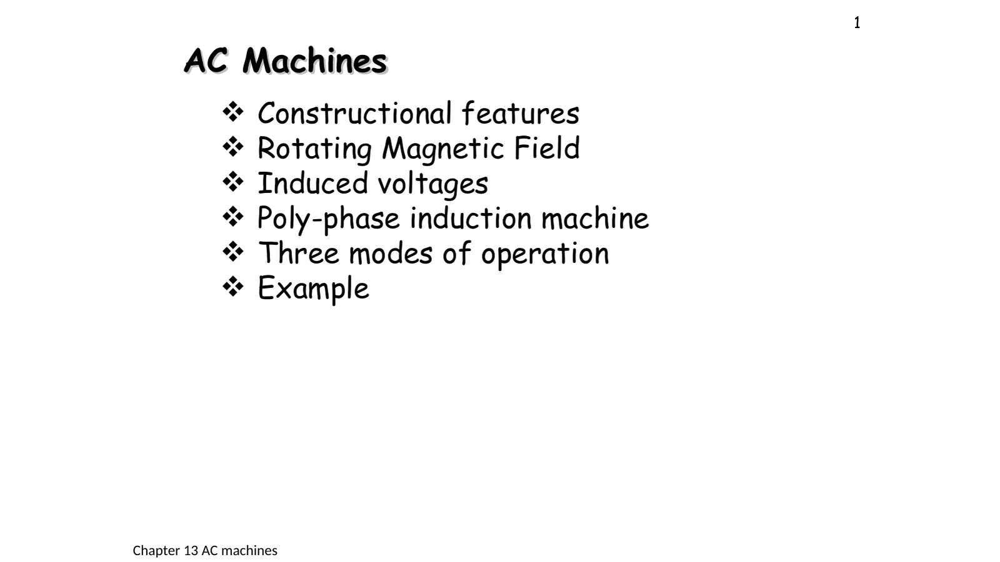
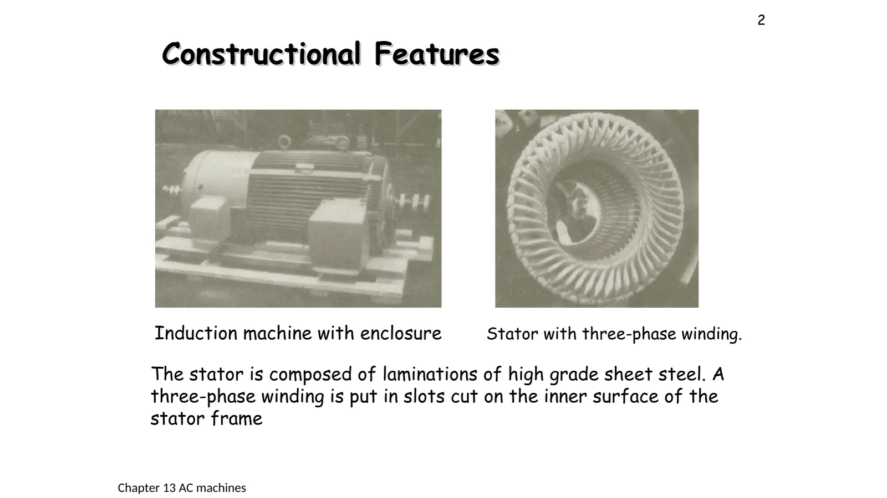
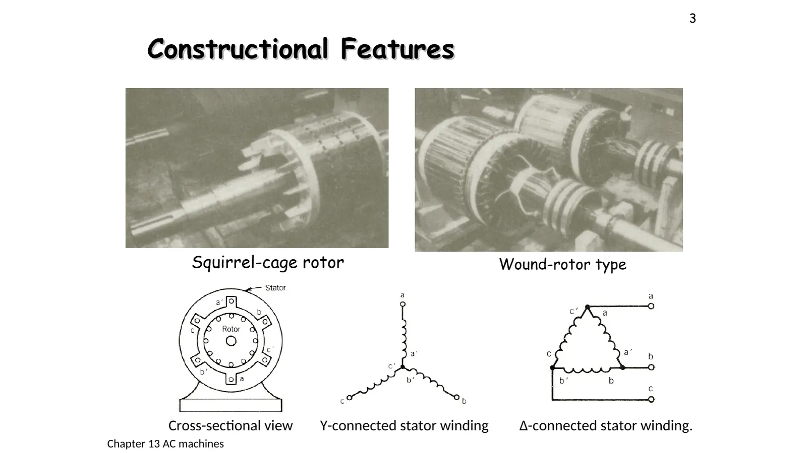

เครื่องจักรกลไฟฟ้ากระแสสลับ: โครงสร้างและสนามแม่เหล็กหมุน Three fixed coils, one turning field
AC machines: construction and the rotating magnetic field Three fixed coils, one turning field
บทที่ 12 ใช้เอกสารประกอบการสอน "Electrical Engineering (Chapter 12) AC Machines" ของผู้สอน (11 หน้า) ซึ่งเรียงตามบทที่ 5 ของ P. C. Sen (Principles of Electric Machines and Power Electronics พิมพ์ครั้งที่ 3 หัวข้อ 5.1–5.5) และเน้นมอเตอร์เหนี่ยวนำสามเฟส (three-phase induction motor) ซึ่งเป็นมอเตอร์ที่ใช้มากที่สุดในโรงงาน เอกสารไม่มีเฉลยในห้อง ตัวเลขทุกข้อตรวจกับเฉลยของตำราแล้ว หน้านี้ครอบคลุมสไลด์หน้า 1–4: โครงสร้างของเครื่อง (ส่วน A) แล้วตอบคำถามสำคัญของบทว่า ขดลวดสามชุดที่อยู่กับที่สร้างสนามแม่เหล็กที่หมุนได้อย่างไร (ข้อ 1) และสนามหมุนเร็วเท่าใดเมื่อเปลี่ยนจำนวนขั้วหรือความถี่ (ส่วน B)
Chapter 12 uses the instructor's handout "Electrical Engineering (Chapter 12) AC Machines" (11 slides), which follows chapter 5 of P. C. Sen, Principles of Electric Machines and Power Electronics (3rd ed., sections 5.1–5.5) and centres on the three-phase induction motor, the most common motor in industry. The handout has no class solutions; every number has been checked against the book's solutions. This page covers slides pp. 1–4: the parts of the machine (section A), then the key question of the chapter, how three coils that stay still make a magnetic field that turns (problem 1), and how fast it turns for other numbers of poles or frequencies (section B).
The stator (the part that stays still) is a core of thin steel laminations with a three-phase winding in its slots, 120 electrical degrees apart, connected in Y or Δ. The rotor (the part that turns) is either a squirrel cage or a wound rotor brought out through slip rings (slides pp. 2–3, section A).
The rotating magnetic field: three-phase currents 120° apart, in windings placed 120° apart, add up to a field of constant size \(1.5F_m\) that travels round the air gap, although nothing turns (slide p. 4, problem 1).
The synchronous speed is \(n_s = 120f/p\) revolutions per minute (rpm), with p the number of poles. On 50 Hz: 2 poles 3000 rpm, 4 poles 1500 rpm, 6 poles 1000 rpm (section B).
Reversing: swap any two supply leads; the phase sequence reverses and so does the field (problem 1, step 5).

สไลด์หน้า 1: หัวข้อของบท (ท้ายสไลด์ทุกหน้าเขียน "Chapter 13" ซึ่งติดมาจากต้นแบบ บทนี้คือบทที่ 12) · แตะรูปเพื่อขยายSlide p. 1: the chapter's topics (every slide's footer says "Chapter 13", left over from the template; this is chapter 12) · tap to enlarge
A
โครงสร้างของมอเตอร์เหนี่ยวนำสามเฟส
The parts of a three-phase induction motor
สไลด์หน้า 2–3 · P. C. Sen หัวข้อ 5.1
Slides pp. 2–3 · P. C. Sen, section 5.1

สไลด์หน้า 2 · แตะรูปเพื่อขยายSlide p. 2 · tap to enlarge

สไลด์หน้า 3: โรเตอร์สองแบบ ภาพตัดขวาง และการต่อขดลวดสเตเตอร์แบบวายและเดลตา (บทที่ 9)Slide p. 3: the two rotors, a cross-section, and the stator winding in Y and in Δ (chapter 9)
ภาพตัดขวางของเครื่อง 2 ขั้ว: ขดลวดของเฟส a (แดง) b (เหลือง) และ c (ฟ้า) วางในร่องของสเตเตอร์ ตัวอักษรมีขีด เช่น a′ คือด้านขากลับของขดลวดเดียวกัน ⊙ คือกระแสพุ่งออกจากจอ ⊗ คือพุ่งเข้าจอ ในภาพนี้จ่ายไฟสามเฟสอยู่ แถบสีในช่องอากาศคือสนามแม่เหล็กหมุน (ส้ม = N ม่วง = S) และโรเตอร์หมุนช้ากว่าสนามเล็กน้อย จึงมีกระแสเหนี่ยวนำในแท่งตัวนำ ทางขวาคือโรเตอร์เมื่อมองด้านข้าง กดเลือกส่วนที่จะดู และสลับชนิดของโรเตอร์ได้
A cross-section of a 2-pole machine: the coils of phase a (red), b (yellow) and c (blue) lie in the stator slots; a primed letter such as a′ is the return side of the same coil; ⊙ is current out of the screen, ⊗ into it. The machine is on a three-phase supply here: the coloured band in the air gap is the rotating field (orange = N, purple = S), and the rotor turns a little slower than the field, so the bars carry induced currents. On the right is the rotor seen from the side. Pick a part, and switch the type of rotor.
Three phase windings are placed 120 electrical degrees apart; each makes an mmf with peak \(F_m\), distributed as a sine round the air gap. With the balanced three-phase currents of slide p. 4, show that the resultant mmf has a constant size and travels round the air gap. Find the size of the resultant relative to \(F_m\), and the speed of the field in a 4-pole machine on 50 Hz.
The simulation adds the phases one step at a time: each phase's coloured arrow points along its axis with a length set by its current, the white arrow is the resultant and the white dots trace its tip. The graph beside it is the currents against time (the vertical line is now) and the dashed line is the size of the resultant. Step 3 has all three phases, step 5 swaps two, step 6 changes to 4 poles. Try it first.
B
จำนวนขั้ว ความถี่ และความเร็วซิงโครนัส
Poles, frequency and the synchronous speed
สไลด์หน้า 4 · P. C. Sen หัวข้อ 5.2
Slide p. 4 · P. C. Sen, section 5.2
เครื่อง p ขั้วมีขดลวดของแต่ละเฟสซ้ำกัน p/2 ชุดรอบสเตเตอร์ สนามจึงมี N และ S สลับกัน p ตำแหน่ง และหมุนทางกลช้าลงเมื่อจำนวนขั้วมากขึ้น เลือกจำนวนขั้ว ความถี่ และลำดับเฟส: แถบสีในช่องอากาศหมุนให้เห็นจริง ส่วนความเร็วจริงอ่านได้ในแผง (ภาพจำลองเล่นช้าลงเท่ากันทุกกรณี ความเร็วในภาพจึงเทียบกันได้)
A p-pole machine repeats each phase winding p/2 times round the stator, so the field has p alternating N and S regions and turns mechanically slower as the poles increase. Pick the number of poles, the frequency and the phase sequence: the band in the air gap turns before your eyes, and the panel gives the real speed (the simulation is slowed down by the same factor every time, so its speeds compare fairly).
C
ฝึกเพิ่ม
More practice
ตอบทศนิยมอย่างน้อย 2 ตำแหน่ง
Give at least 2 decimal places
ลองทำดู 1 — โครงสร้าง
ส่วน A เลือกขดลวดสเตเตอร์: ด้านของขดลวดเรียงรอบสเตเตอร์เป็น a, c′, b, a′, c, b′ (ทวนเข็มนาฬิกา) ห่างกันทีละ 60°